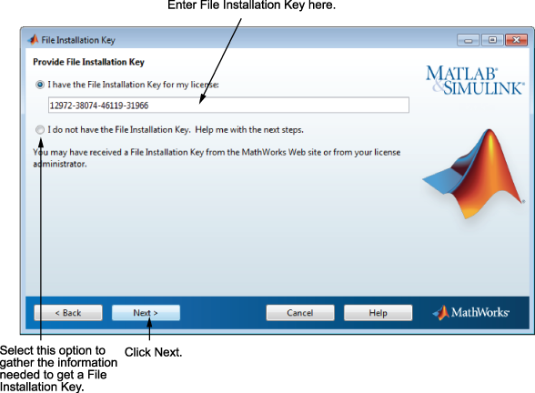

If you do not have an Internet connection, and choose to install manually, the installer displays the File Installation Key dialog box. A File Installation Key identifies the products you can install.
If you have the key, select the I have the File Installation Key for my license option, enter the File Installation Key, and click Next. The administrator contact on a license can retrieve the File Installation Key from the License Center at the MathWorks® website.
If you do not have the key, select the I do not have the File Installation Key option and click Next. The installer provides you with the information you need to get a key.
